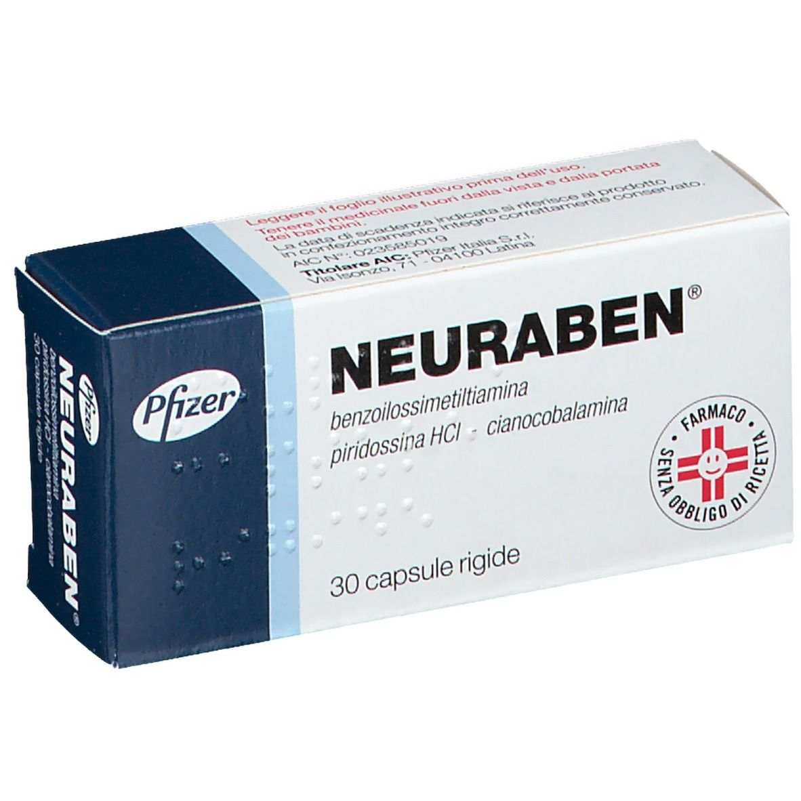

Контактная информация:
Цена: Уточнять у менеджера
Под заказ
Производитель: Италия
Цена: Уточнять у менеджера
Под заказ
Именно в FarmItal вы можете купить неурабен,neuraben,Витамины группы B в Украине, Гарантированно Качественный!
Доставка Neuraben капсулы,Витамины группы B осуществляется транспортными компаниями, сроки выполнения заказа оговариваются менеджером Фармитал. Вы можете заказать Неурабен капсулы в городах: Одесса, Херсон, Чернигов, Северодонецк, Бердянск, Бровары, Днепр, Винница, Киев, Славянск, Полтава, Краматорск, Белая Церковь, Каменское, Мариуполь, Черновцы, Александрия, Каменец -Подольский, Львов, Запорожье, Кропивницкий, Житомир, Ивано-Франковск, Сумы, Черкассы, Константиновка, Мелитополь, Кривой Рог, Ровно, Луцк, Никополь, Павлоград, Ужгород, Кременчуг, Лисичанск, Хмельницкий, Тернополь, Харьков, Николаев, а также других населенных пунктах Украины.
Капсулы.
Neuraben Капсулы – это препарат, используемый для лечения полиневрита от carenziali С содержанием витамина В1, В6 и В12 и лечения псориаза, вызывая успокаивающий эффект, необходим при данной болезни.
Лечение острых приступов подагры и профилактика острых приступов подагры во время начального лечения препаратами аллопуринола или препаратами, способствующими выведению мочевой кислоты.
Повышенная чувствительность к компонентам лекарства.
Neuraben Капсулы следует принимать в следующих дозах и режиме: по 1 капсуле 3 раза в день.
Самолечение может быть вредным для вашего здоровья! Перед началом лечения обратитесь к вашему врачу!!
Neuraben, как правило, хорошо переносится и не вызывает токсических эффектов и накопления в организме.
Не имеет симптомов при передозировке.
Не существует противопоказаний к использованию Неурабена в период беременности.
Хранить в недоступном для детей месте. Не требует особых условий хранения.
не использовать препарат после срока годности, указанного на упаковке.
Benzoilossimetiltiamina 100 мг, Пиридоксин гидрохлорид 150 г, Цианокобаламин 500 мкг
Тальк, стеарат магния, полиэтиленгликоль 6000, Титана диоксид (Е171), оранжевый средний (Е110), желатин